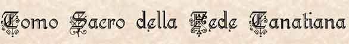

Questo è il Tomo su cui si basa la fede tanatiana . Tutti i fedeli e i chierici devono rispettare le sue regole . Attraverso il rispetto delle regole sancite in questo Tomo si vive secondo la dottrina del culto di Tanatos . Il Pontefice è l’unico in grado di formulare le massime da inserire nel Tomo Sacro o tali da modificarne il contenuto . Il Concilio dei Vescovi darà l’approvazione affinché il verbo del Pontefice sia inserito nel Tomo Sacro . Dopo la loro formulazione approvazione e inserzione i dettati del Tomo dovranno essere rispettati come fede tanatiana . Ogni credo o opinione contrastante a una regola imposta dal tomo che non provenga dal pontefice è considerata un’eresia e come tale dovrà essere combattuta . Il Tomo Sacro è redatto in Argan e i veri fedeli lo conoscono a memoria .
Credo
fondamentale
Credo che solo Tanatos fra tutti gli Dei garantisca che il bene regni sovrano sul mondo di Arelia . Tanatos è il portatore di luce e di bene . Non adorerò altra divinità all’infuori di Tanatos il Solo .
Credo che il bene debba trionfare e che la luce debba illuminare Arelia abbagliando le immonde creature delle tenebre , credo che l’ordine costituito debba regnare e che il caos e le rivolte debbano essere combattuti . Credo che l’anarchia il disordine e il caos debbano essere fermati e arginati dalle leggi e dalla fede .
Credo che siano solo i chierici a poter parlare in nome di Tanatos , sono i chierici i portatori delle sue volontà sul piano materiale . Solo i chierici possono diffondere interpretazioni in materia di fede . Mai contraddirò in materia di fede un chierico tanatiano , potrò però recarmi da un altro chierico per ottenere i chiarimenti necessari .
Qualora in materia di fede ci sia un disaccordo fra più chierici , considererò sempre giusto quello che proviene da colui sia gerarchicamente superiore . Sempre giusto e decisivo sarà il verdetto del Concilio dei Vescovi .
Credo che nei paladini splenda grande la fede di Tanatos , in loro la luce è forte e calda .
Sempre la mia fiducia in loro
riporrò e le loro scelte approverò . I
paladini si asterranno dal diffondere proprie tesi teologiche o interpretazioni
e dall’appoggiare una determinata tesi piuttosto che un’altra . Liberi però
saranno di interpretare la propria personale concezione religiosa .
Rispetto
dell’ordinamento ecclesiastico
Saranno gli Arcivescovi e i Vescovi gli unici ad organizzare territorialmente il culto di Tanatos . Sempre rispetterò le istituzioni , le gerarchie e le autorità da costoro create .
Massimo sarà il mio rispetto per i ministri della fede e per le spade della luce . Grande onore riserverò ai chierici e ai paladini e fra questi maggiore rispetto e onori andranno a coloro che gerarchicamente sono in posizione superiore .
Chi sarà inserito nell’organizzazione del culto dovrà rispettare le decisioni dei suoi superiori e opererà in modo da mantenere alto il rispetto delle stesse .
Cura e rispetto avrò per i beni del culto , non profanerò , non ruberò e non danneggerò i beni tanatiani . Custodirò gelosamente oggetti sacri , santificati e benedetti impedendo che cadano nelle mani dei malvagi .
Mi prodigherò affinché al culto mai manchino le risorse per svolgere le sue funzioni e portare la luce di Tanatos nelle nostre vite . Grandi saranno le mie offerte e accetterò le spese necessarie al funzionamento del culto .
Valuterò gli interessi di coloro in cui la fede è più forte[1] come anteposti rispetto a quelli di coloro in cui la fede è minore .
Norme comportamentali morali
Rispetterò sempre la vita di tutte le creature . Ultimo di tutti i rimedi sarà per te l’uccisione di una creatura , e agirai in tal modo solo in caso di estremo bisogno . Non potrò considerare estremo bisogno una situazione da te stesso cercata , che fosse stata prevedibile e in qualche modo aggirabile . Curerò i nemici feriti e mai abbandonerai uno sconfitto al suo destino a meno che non si tratti di una situazione di estremo bisogno .
Non userò mai la violenza qualora la ragione , il dialogo o l’accordo saranno in grado di risolvere il problema creatosi .
Agirò per portare il bene nella vita di tutte le creature , non attenderò e compirò il mio dovere ogni giorno . Non scaricherò sugli altri i miei doveri e le mie responsabilità .
Vivrò in modo tale che il piacere e il vizio non mi distolgano mai dai miei doveri e dalla ricerca del bene assoluto attraverso la fede tanatiana.
Mai compirò azioni che per mio interesse personale siano in grado di danneggiare altri fedeli senza che costoro lo meritino . Non sfrutterò altre creature per il mio interesse e riconoscerò a tutti il diritto alla loro meritata ricompensa .
Rispetterò le leggi dettate dagli Stati riconosciuti dal Pontefice[2] come meritevoli di fiducia e di obbedienza . Non mi opporrò al fatto che coloro che le abbiano violate siano puniti secondo le leggi del luogo .
A tutti concederò una seconda possibilità per la loro redenzione qualora costoro siano sinceramente interessati nel perdono di Tanatos .
Eviterò le ingiustizie e farò in modo che la verità trionfi sempre , potrò agire diversamente solo per tutelare direttamente il culto di Tanatos e i suoi membri . Aiuterò i fedeli in difficoltà e sfamerò quelli più bisognosi e indigenti.
Rispetterò, onorerò e proteggerò colui o colei che ho scelto per legarmi nell’amore e curerò i figli ottenuti al culto e alla fede tanatiana . Dividerò con costoro le mie risorse per garantirgli una vita più piacevole e serena .
La difesa del culto e del bene e l’ordine assoluto
Non tollererò e impedirò atti contrari al culto tanatiano , alle sue istituzioni o a coloro che nella fede le servono . Opererò in modo da bloccare coloro abbiano intenti contrari alla fede e farò in modo che siano da tutti i fedeli riconosciuti e condannati.
Non tollererò coloro compiano atti malvagi o contrari alla fede , che quindi in questo modo la indeboliscano , agirò in ogni modo per fermarli e per rimuovere gli effetti della loro malvagità . Qualora sia necessario utilizzerò la forza della fede . Coloro che agiscono contro i dettati tanatiani apportano energie alle malvagie divinità del male portatrici di dolori e di sofferenze . Per questo motivo costoro le fermerò e le convincerò alla giusta fede tanatiana . Vigilerò sulle creature che per forza di natura non possono essere portate alla fede di Tanatos in modo tale da impedire che agiscano contro i suoi dettati indebolendola . Controllerò che fra costoro non siano operanti rituali di divinità malefiche e ostili alla vita .
Non tollererò coloro vogliano modificare l’ordine riconosciuto apportando caos e disordine in grado di indebolire la fede e allontanare il bene . Difenderò l’ordine , le leggi e le istituzioni riconosciute e mai mi rivolterò ai loro dettati .
Riconosco nella magia necromantica e oscura il tentativo di inquinare il nostro mondo con energie di dimensioni negative e oscure da cui ci si deve difendere innalzando la barriera della fede . Non tollererò che questa magia sia utilizzata e fermerò coloro la vogliano utilizzare anche a costo di utilizzare la forza della fede .
Distruggerò e scaccerò , nel nome della fede di Tanatos , le creature provenienti dal piano negativo e coloro la cui esistenza si fonda sulle negative e malvagie energie da questo piano provenienti .
Il
rapporto con gli altri culti
Rispetterò e sarò amichevole con i fedeli delle divinità amiche e riconosciute dal Pontefice[3] che rispettino la fede tanatiana e gli accordi con questa .
Coloro che compiono i rituali malefici delle divinità malvagie apportano le maggiori energie ai poteri negativi e per questo motivo farò in modo che i loro rituali e i loro culti siano impediti , vietati e fermati . Demolirò e brucerò i loro templi e i simboli malefici , distruggerò le reliquie e tutti gli altri oggetti di culto maledetti .
[1] In base a questa statuizione si è formata una vera gerarchia di fede crescente :
Coloro che non credono , coloro che credono in un culto amico e riconosciuto , i registrati , i fedeli , gli accoliti , gli adepti , i sacerdoti , i priori , tutti i paladini , i vescovi , gli arcivescovi e il pontefice .
[2] Gli Stati attualmente riconosciuti si riflettono negli stati che aderiscono alla Confederazione del Sud-Arelia , non vi rientrano quindi , Il Granducato di Karsar ( con capitale Pergar ) e la Magocrazia Indipendente di NuovaNembus.
[3] Sono riconosciute dal Pontefice i culti di : Arlinir , Srodan , Balilia , Silvisk nei confini della Repubblica , Loky secondo i trattati , Eram fra coloro viaggino sui mari .